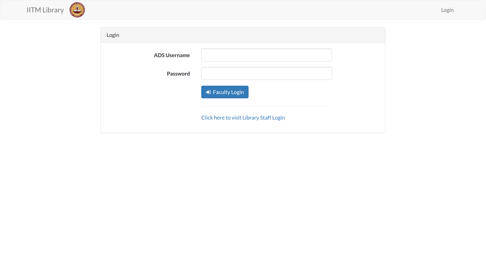
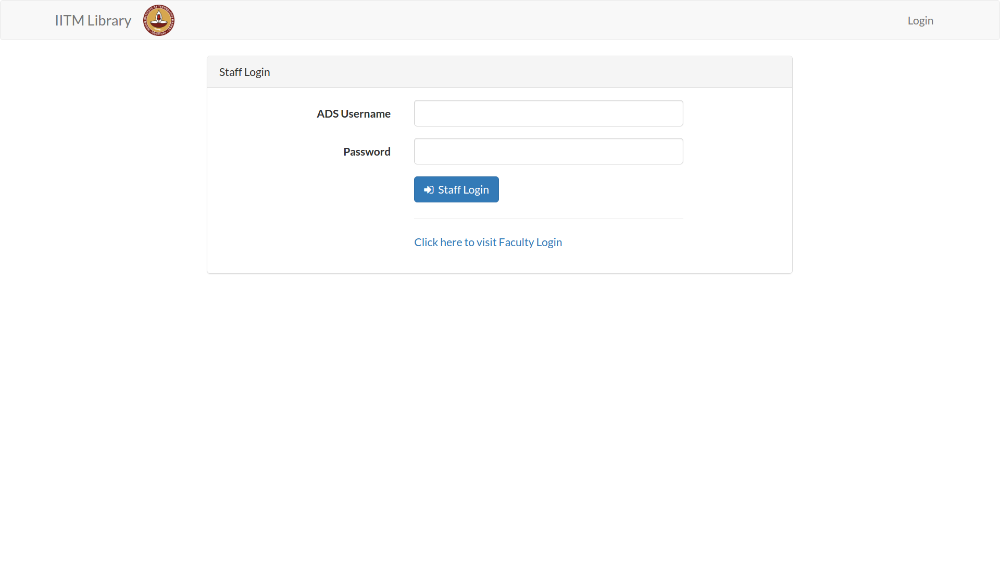
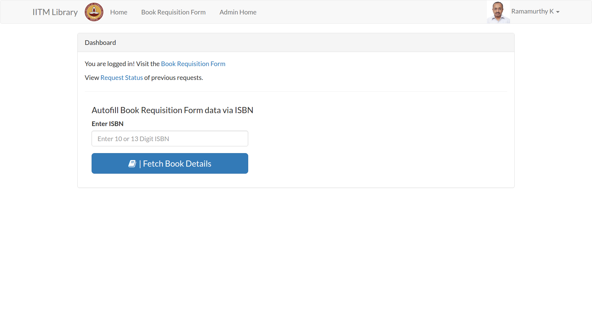
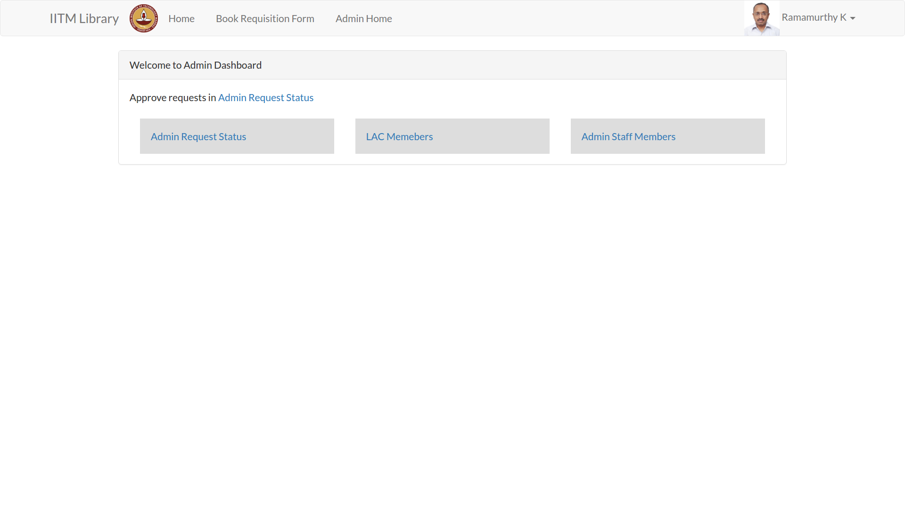
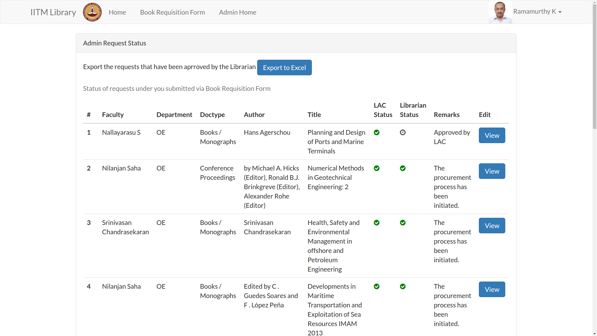
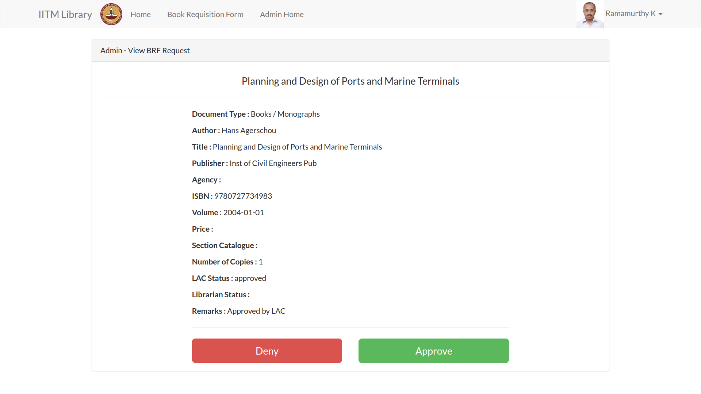
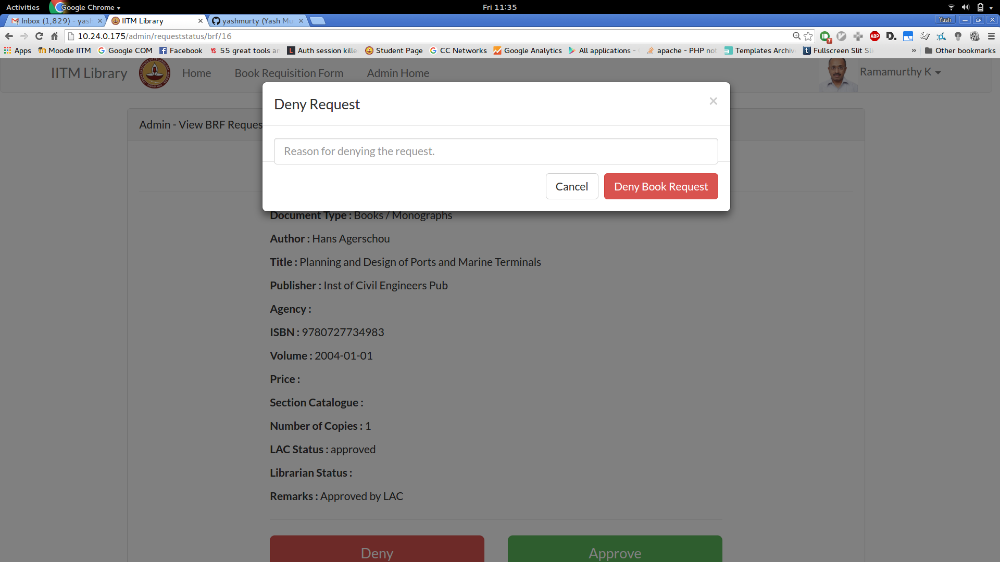

Documentation for Administrators¶
Visit the IITM Library URL. Since you are not yet signed in, you will be redirected to the Login URL which is http://10.24.0.175/login
Step 1 : Log in for Staff¶
The Login Page looks like this.
You can login using your ADS credentials.
Note
If you are not a Faculty, but are a member of Library Staff, click on the link below Faculty Login Button which says Click here to visit Library Staff Login.
The Staff Login Page looks like this.
Step 2 : Home Page¶
After Logging in, you will be taken to the Home page. You can enter the ISBN number on this page and it will automatically fetch the book details and take you to the Book Requisition Form. The Home page looks like this.
You can see in the top navigation bar a button which says Admin Home. Clicking it will take you to the Admin Dashboard.
Step 3 : Admin Dashboard¶
It has currently three active modules:
- Admin Request Status
- LAC Members
- Admin Staff Members
This is how the Admin Dashboard looks like.
To accept book requests, click on Admin Request Status. This will load the following request status page.
Step 4 : Approve/Deny Requests¶
After reaching the Admin Request Status page as explained above, you can view all the book requests made by the faculty, and which have already been approved by LAC Members. To appove/deny these requests click on the View button in the last column.
If you click Approve, the book request gets approved and will be Exported to Excel the next time you export all the pending requests.
If you click Deny, a dialog box will be displayed, requesting you to explain the reason for for denying the book request.
When you enter the reason and submit it, an Email is sent to the Faculty as well as the respective LAC member informing them about the rejection of request, along with the reason that you entered.
Note
An email is not sent to the faculty when you click Approve button here. Approval email is only sent to the respective faculty when their book request gets exported to Excel.